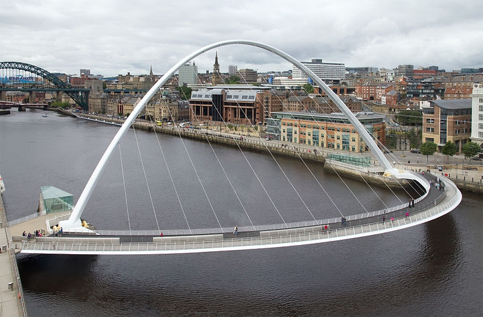
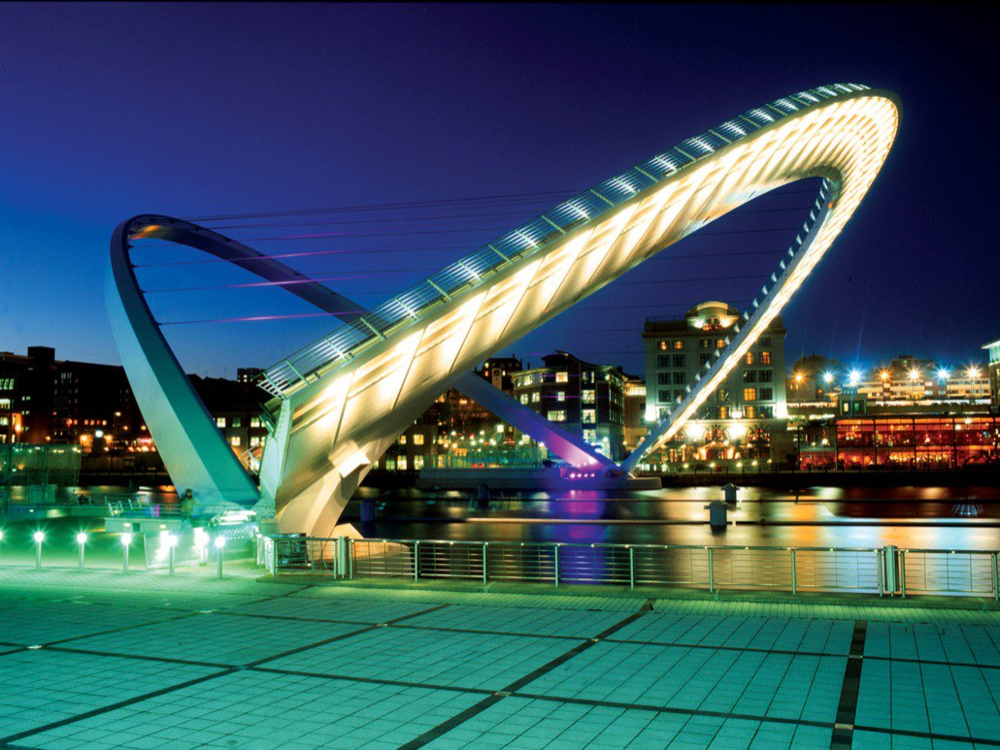
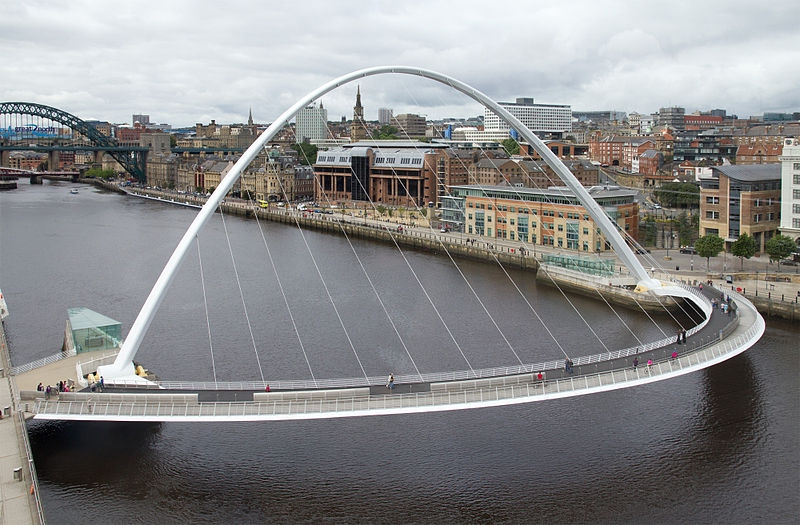
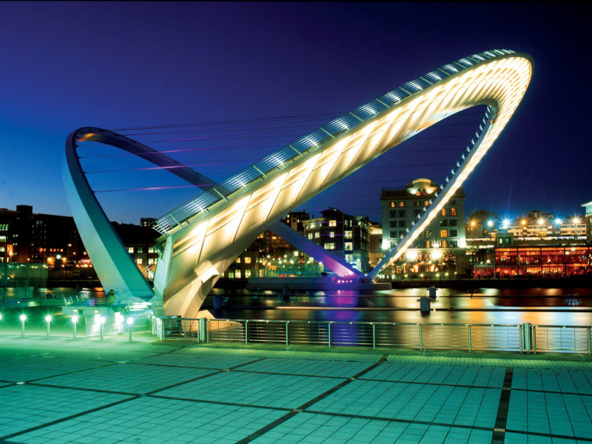
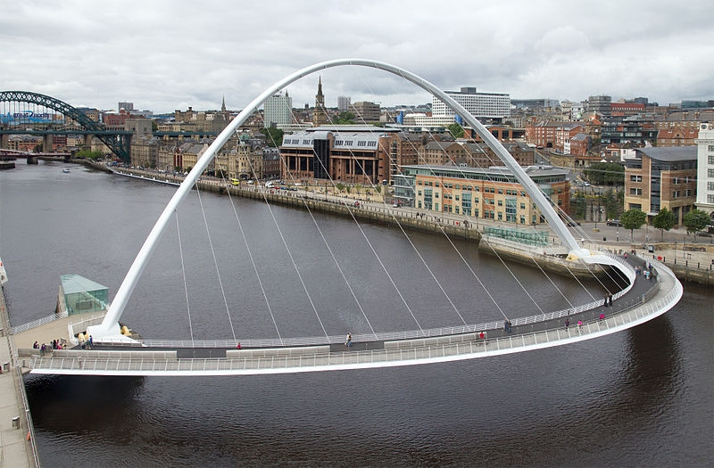
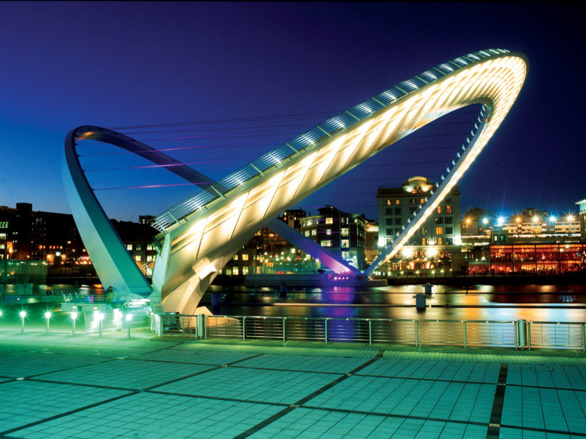
В Англии существует два Моста Тысячелетия, но расположенный между городами Гейтсхед и Ньюкасл-апон-Тайн является первым в мире наклоняемым мостом. Это сооружение служи для передвижения пешеходов и велосипедистов через реку Тайн, и чтобы не мешать проходящим крупным судам, было предложено сделать его наклоняемым. За год мост меняет свое положение до 200 раз, а каждое такое событие собирает толпы зрителей.
В основе моста лежат две стальные арки, соединенные между собой стальными тросами. Во время движения по нему людей одна из арок находится параллельно воде, а вторая парит над водной гладью на высоте до 50 метров. Угол поворота арок составляет 40 градусов, а сам процесс занимает не более 5 минут. Во время прохождения судов клиренс моста составляет 25 метров.
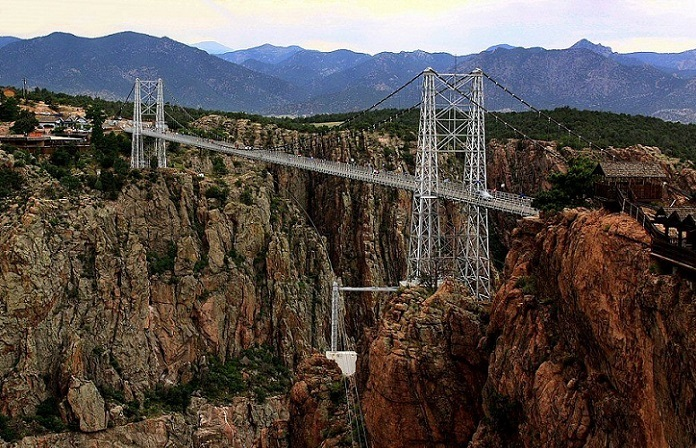 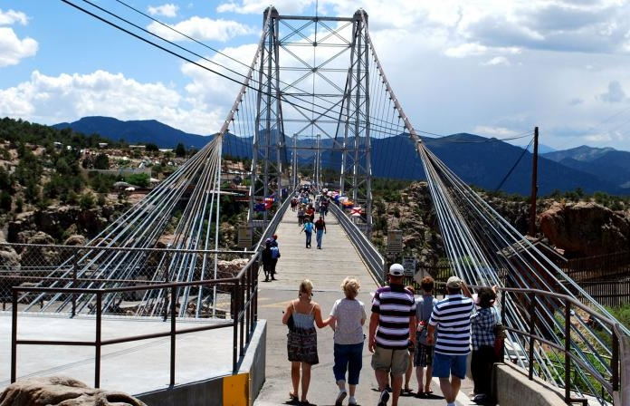 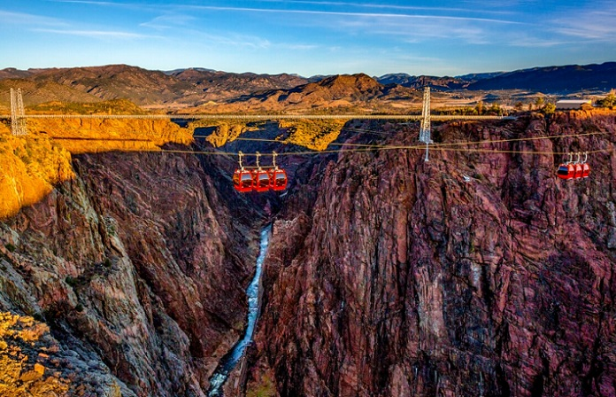
Самым опасным и впечатляющим на территории Соединенных Штатов считается мост, проходящий над Королевским ущельем в Колорадо. Он является одним из немногих мостов в мире, который изначально был построен для туристических целей. Открытие моста состоялось в 1929 году. Без малого сто лет сюда приезжают любознательные туристы, чтобы полюбоваться панорамным видом Королевского ущелья и протекающей по его дну рекой Арканзас. Для поклонников экстремальных развлечений главной привлекательной особенностью моста остается высота его расположения, а также его относительная устойчивость к порывам ветра.
Масштабы сооружения довольно серьезные. С ущельем мост разделяет 291 метр. Длина моста составляет более 380 метров. В 1989 году необычная достопримечательность была серьезно усовершенствована — теперь мост не так сильно раскачивается на ветру и прогуливаться по нему стало гораздо комфортнее. Путешественникам, которым любования окрестностями с моста покажется недостаточно, предлагают прокатиться на гандоле либо совершить зиплайн полет над ущельем. Еще один верный способ вызвать приток адреналина — банджи-джампинг.
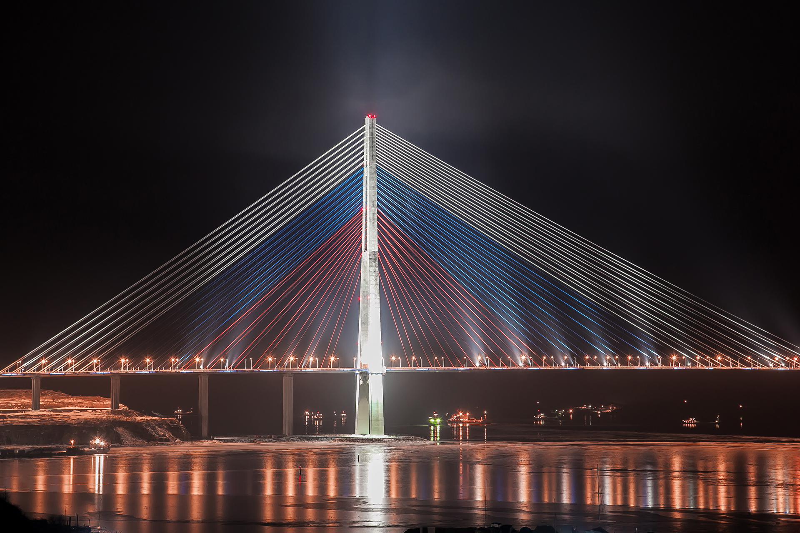 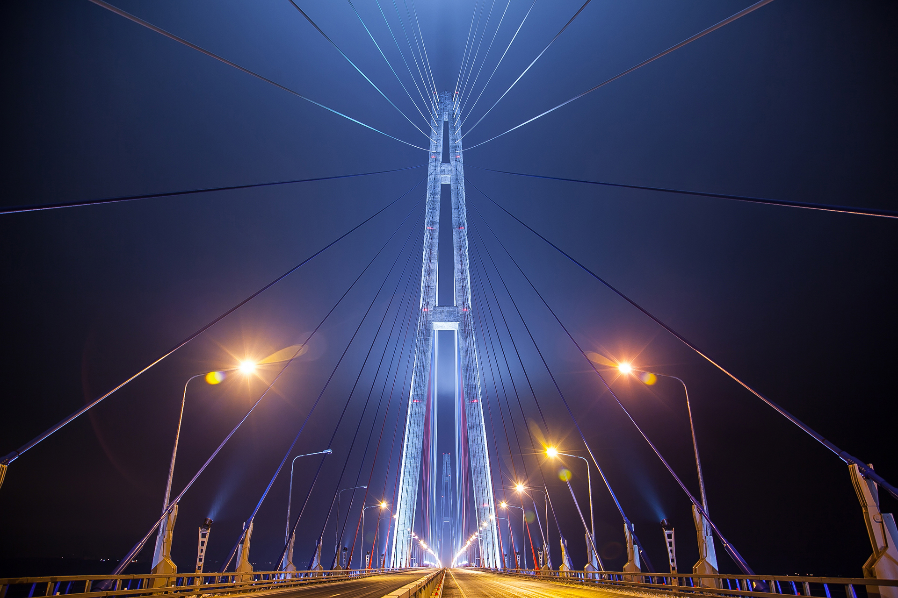 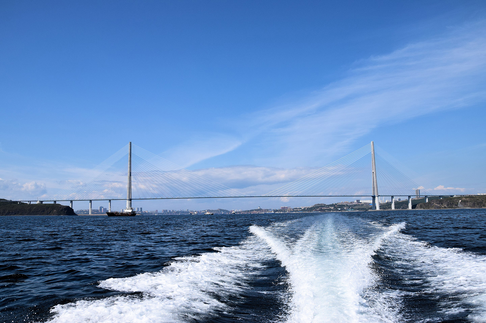
Является рекордсменом в списке вантовых мостов с самым длинным в мире пролетом, равным 1104 м. По высоте конструкций он также не пасет задних, занимая вторую строчку с показателем в 324 м. Министерство транспорта РФ считает Русский мост невероятно сложным и уникальным объектом во всей практике мостостроения в России и даже мире. Кстати, это сооружение уже давно красуется на банкноте номиналом в 2000 рублей, так что заочно с ним знакомы очень многие.
Сама идея о постройке моста на остров Русский возникла еще в 1939 году, но тогда осуществлению замыслов помешала Великая Отечественная война. В 1960-х годах этот вопрос также неоднократно поднимался, но его реализацией так никто и не занялся. Еще одним интересным фактом является то, что Русский мост стал первым в мире вантовым сооружением, где эти самые ванты подверглись оледенению — произошло это в ноябре 2020 года из-за сильного ледяного шторма. Для решения проблемы привлекались промышленные альпинисты, удалившие свыше 2300 тонн льда.